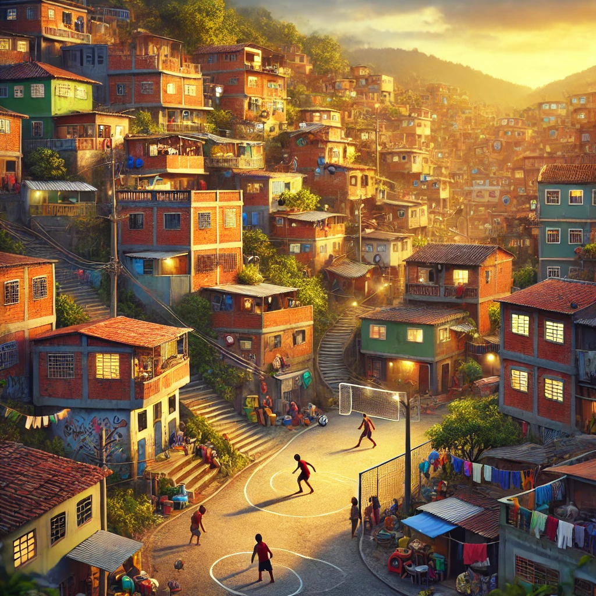
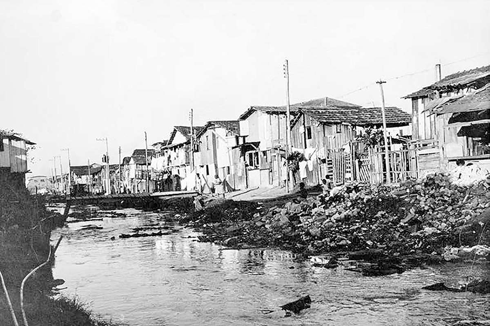
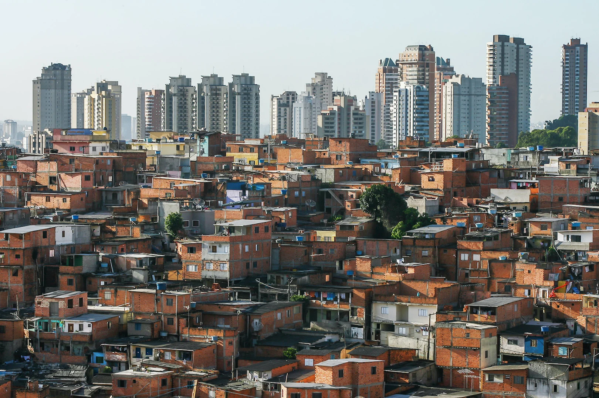

A Formação das Periferias e a Desigualdade no Brasil
Uma análise histórica e social sobre o impacto da segregação urbana
As periferias surgiram como consequência da segregação social e econômica. Após a Abolição da Escravidão, a população negra foi marginalizada, sem acesso a moradia digna, levando à ocupação de áreas afastadas dos centros urbanos. Sem políticas públicas de inclusão e moradia acessível, os ex-escravizados e seus descendentes foram forçados a se estabelecer em terrenos irregulares, em encostas de morros e áreas desvalorizadas, criando os primeiros assentamentos informais que mais tarde dariam origem às favelas. Além da falta de moradia, a segregação se manifestou também na exclusão do mercado de trabalho formal. A elite da época restringiu o acesso dos negros recém-libertos a empregos de maior qualificação, forçando-os a desempenhar funções precarizadas e mal remuneradas. Isso intensificou a desigualdade econômica e dificultou ainda mais a ascensão social dessa população. No século XX, com o crescimento acelerado das cidades devido à industrialização, muitas famílias migraram para os grandes centros em busca de melhores condições de vida. Entretanto, o Estado priorizou investimentos em infraestrutura para bairros nobres e classe média emergente, deixando as regiões periféricas sem saneamento básico, transporte adequado e escolas de qualidade. Assim, a segregação espacial se consolidou como um problema estrutural, perpetuando um ciclo de exclusão e desigualdade social que persiste até os dias de hoje. (Agência Brasil)
Moradores das periferias enfrentam dificuldades devido à negligência do Estado, que historicamente direcionou investimentos e infraestrutura para áreas centrais e bairros de elite, deixando comunidades periféricas sem o suporte necessário para uma qualidade de vida digna. O acesso à educação, saúde e saneamento é limitado, com escolas superlotadas, hospitais em condições precárias e ruas sem saneamento básico adequado, o que impacta diretamente a saúde e a expectativa de vida da população. Além disso, a mobilidade urbana é um desafio diário, já que muitas dessas regiões não contam com transporte público eficiente, obrigando trabalhadores a enfrentar longas jornadas em ônibus lotados e trens superlotados para chegar ao emprego. A ausência de políticas eficazes para reduzir essa desigualdade faz com que a população da periferia gaste mais tempo e dinheiro para acessar serviços essenciais, reforçando o ciclo de exclusão social. Enquanto isso, a especulação imobiliária e a falta de planejamento urbano empurram essas comunidades para áreas cada vez mais distantes, tornando o problema ainda mais grave.CNN Brasil
